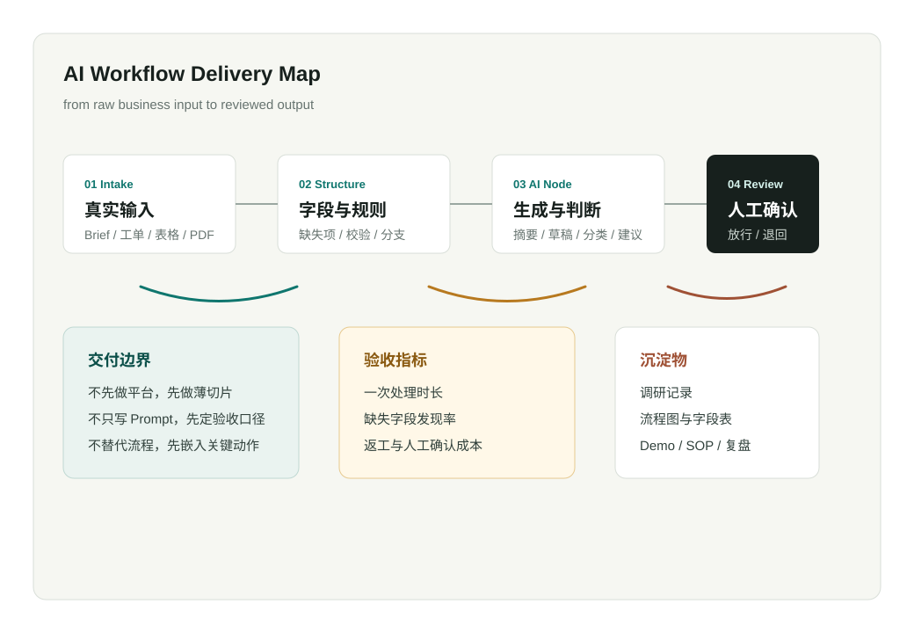

流程拆解
把一句“我们想用 AI 自动化”拆成角色、触发、输入、处理、输出、异常、验收和上线边界。
AI Workflow / Delivery Engineering / Knowledge Ops
我专注于小团队和业务现场里的 AI 落地：先理解真实输入、角色和异常，再把规则、LLM、人工确认、表格和内部工具串成一个能跑、能验收、能继续迭代的最小闭环。

What I Deliver
AI 落地失败通常不是模型不够强，而是没有把输入、规则、异常、人工责任和验收标准讲清楚。我把工程交付拆成三个层次。
把一句“我们想用 AI 自动化”拆成角色、触发、输入、处理、输出、异常、验收和上线边界。
用 Dify、Lark、多维表格、脚本、API 和轻量前端，把真实材料跑成可演示的 Demo。
补齐日志、权限、重试、回滚、监控、SOP 和文档，让原型能被团队继续使用和维护。
Selected Cases
每个案例都从真实业务动作出发：先切小，再验证，再决定是否扩展成更大的工具或系统。
Writing
我会写业务调研、AI 工作流验收、知识库边界、FDE 交付方法和职业系统。文章服务于一个目标：让能力可以被检查。
Contact